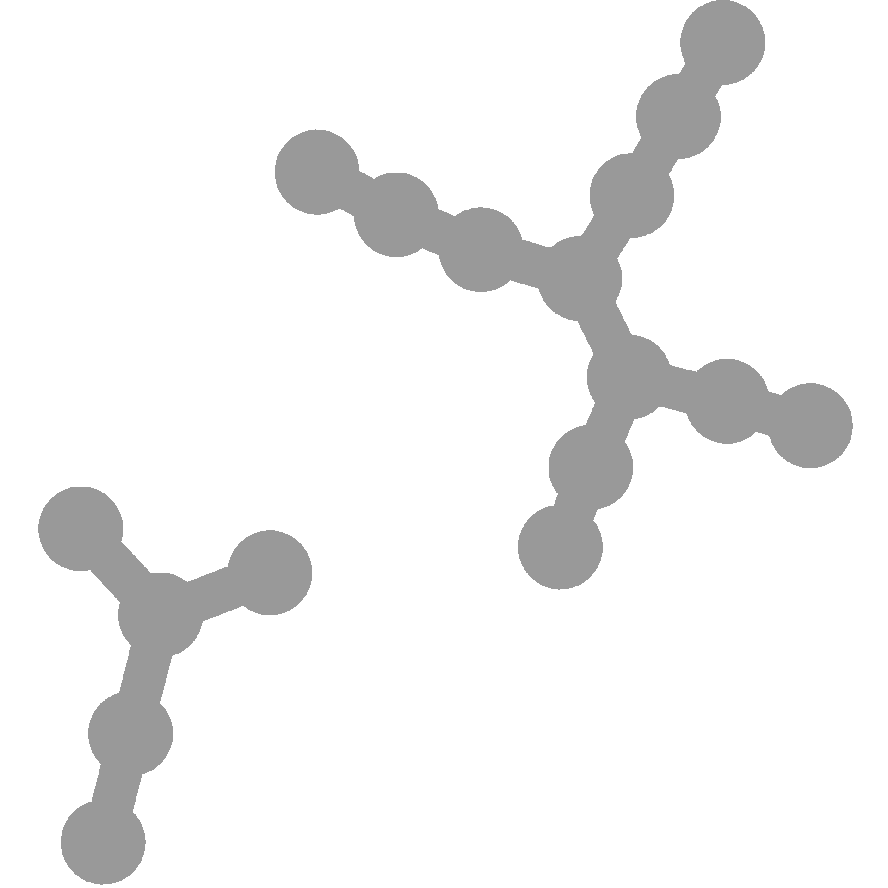
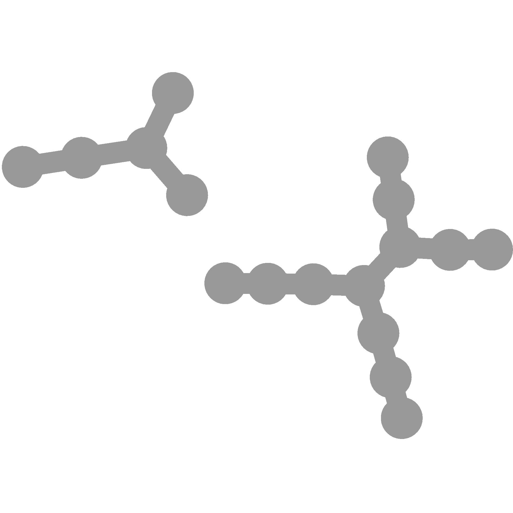
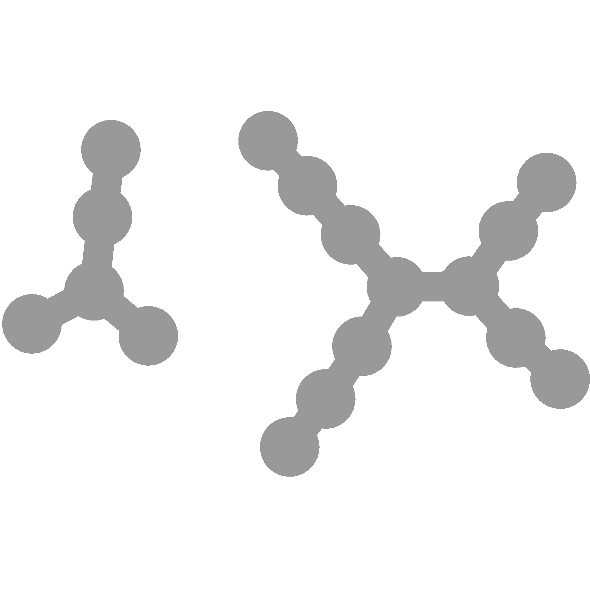
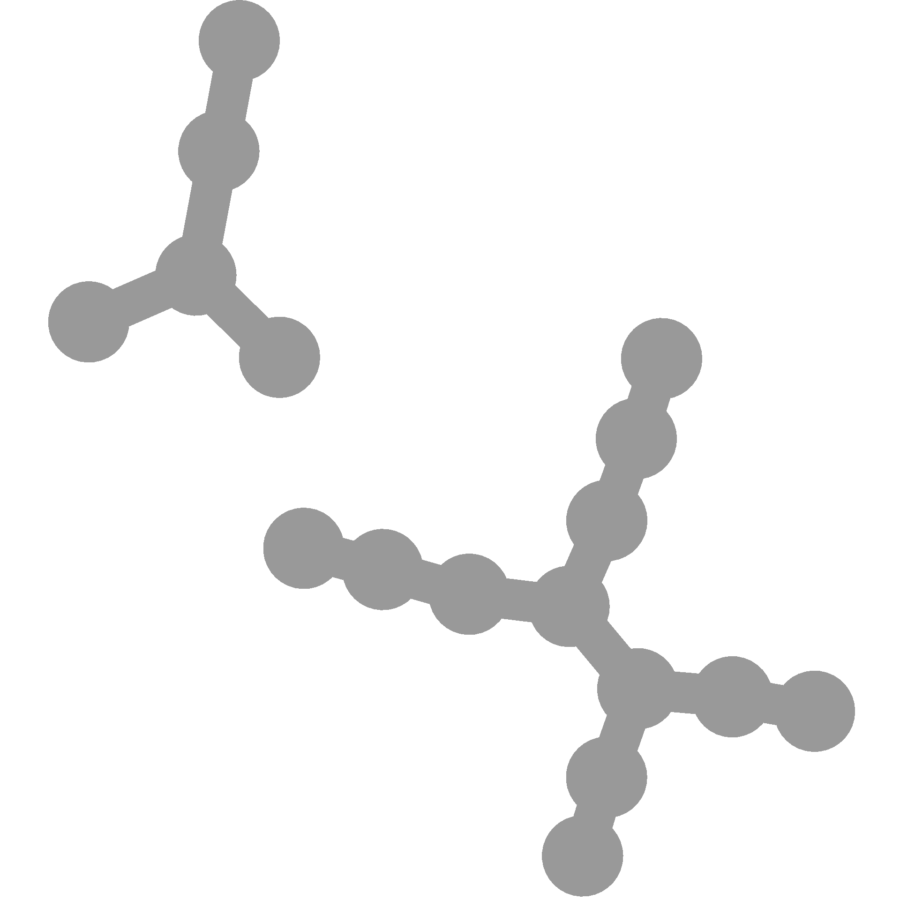

Frequently asked questions
Error: otu_table slot is empty
This happens when you have phyloseq loaded after metacoder. There is also a filter_taxa in phyloseq, so the one from the taxa package is masked. Try prefixing filter_taxa with taxa:: or loading metacoder after phyloseq.
The labels are too small!
This is a common issue. For plots with many taxa (> 300 or so) it might not be possible to make a plot where all taxon labels will be readable in a standard publication figure without zooming in. However, there are a few tricks can help maximize the readability of your labels:
- Only plot the taxa relevant to the purpose of the figure by filtering using
filter_taxabefore passing the result toheat_tree. If you are trying to show the diversity of an entire community, consider filtering out low-abundance or otherwise rare taxa. For example:
my_taxmap %>%
filter_taxa(taxon_names == "Bacteria", subtaxa = TRUE) %>%
filter_taxa(taxon_count > 10) %>%
heat_tree(
...
)- Selectively suppress labels that do not need to be printed. For example, if you have taxon names like “unknown”, they don’t really need to be printed, even if you want the node to show in the graph. You can then say that unlabeled taxa are unknown in the figure caption. For example:
dont_print <- c("unknown", "unidentified")
heat_tree(
...,
node_label = ifelse(taxon_names %in% dont_print, "", taxon_names),
...
)- Try changing the layout of the graph. The default layout does not work well for all taxonomies. There are others that use simulated annealing to space out nodes more, which might make more room for labels. You should experiment with the
layoutandinitial_layoutoptions to see what works best. I like the following settings often:
- Force labels to be a specified size
By default the labels are relative to the size of the nodes. If the nodes are really small, so are the labels. You can force the labels to be a specific size range using the node_label_size_range and edge_label_size_range. These options take a two-value vector of numbers between 0 and 1 indicating the proportion the the plotted area the text size is. For example, to make text height between 1% and 3% of the plot size:
You could also use node_size_range and edge_size_range to change the size of the labels as a side effect of changing the size of nodes/edges.
- Shorten labels
Do your labels have taxonomic rank codes or other unneeded text? If so get rid of it using text replacing functions that can use reqular expressions like sub and gsub. Labels can also be printed over multiple lines, so you might consider replacing some spaces with newlines (\n).
- Split the plot into multiple plots
If you have done all the above and the plot is still too dense, you can turn it into multiple plots of subsets of the data. Large groups you can give their own tree by filtering the taxonomy using filter_taxa:
my_taxmap %>%
filter_taxa(taxon_names == "Ascomycota", subtaxa = TRUE) %>%
heat_tree(
...
)
my_taxmap %>%
filter_taxa(taxon_names == "Basidiomycota", subtaxa = TRUE) %>%
heat_tree(
...
)If you have a bunch of small groups left over after plotting the big ones, make a single tree of those by removing the big ones plotted elsewhere using the subtaxa and invert options:
How do I get my data into metacoder?
That depends on your data’s format. For some formats, there are easy to user “parsers”. All of them start with parse_, so you can type (after loading metacoder) parse_ and hit tab and see what are available. If you format is not one of those, you can very likely use one of the all-purpose parsers supplied by the taxa package. You can read about those here:
Does this work with phyloseq?
Kind of. Metacoder and phyloseq use different data formats, but they both can store the same information. The parse_phyloseq converts from the phyloseq object to the taxmap object format that metacoder uses. The as_phyloseq function converts from taxmap to phyloseq, so you can use both on the same data.
How do I subset a table for just one taxonomic rank (or other per-taxon data)?
This answer also applies to subsetting by any other per-taxon piece of information, such as taxon abundance or number of supertaxa.
Some functions in metacoder return per-taxon information, such as calc_taxon_abund. All taxonomic ranks are represented in this type of output, so you if you see a row for “proteobacteria”, “Bacteria” is probably also there (depending on your taxonomy). Often users want to subset these tables for rows corresponding to a given rank, such as all the species. Lets get an example data set to play with:
##
## Attaching package: 'dplyr'## The following objects are masked from 'package:stats':
##
## filter, lag## The following objects are masked from 'package:base':
##
## intersect, setdiff, setequal, union# Parse data for example
x = parse_tax_data(hmp_otus, class_cols = "lineage", class_sep = ";",
class_key = c(tax_rank = "taxon_rank", tax_name = "taxon_name"),
class_regex = "^(.+)__(.+)$")
# Calculate the taxon abundance for each numeric column (i.e. sample)
x$data$tax_abund <- calc_taxon_abund(x, "tax_data", groups = hmp_samples$sex)## NOTE: Using the "groups" option without the "cols" option can yeild incorrect results if the column order is different from the group order.## No `cols` specified, so using all numeric columns:
## 700035949, 700097855, 700100489, 700111314 ... 700095535, 700102367, 700101358## Summing per-taxon counts from 50 columns in 2 groups for 174 taxa# Add taxon name to tax_abund to see filtering effects easier
x$data$tax_abund <- x$data$tax_abund %>%
mutate(taxon = taxon_names(x)) %>%
select(taxon_id, taxon, everything())
x## <Taxmap>
## 174 taxa: ab. Root, ac. Proteobacteria ... gr. Blautia, gs. Clostridium
## 174 edges: NA->ab, ab->ac, ab->ad, ab->ae, ab->af ... dk->gp, cm->gq, cf->gr, cw->gs
## 3 data sets:
## tax_data:
## # A tibble: 1,000 x 53
## taxon_id otu_id lineage `700035949` `700097855` `700100489` `700111314`
## <chr> <chr> <chr> <int> <int> <int> <int>
## 1 dm OTU_9… r__Roo… 0 2 1 0
## 2 dn OTU_9… r__Roo… 0 0 0 0
## 3 do OTU_9… r__Roo… 0 1 0 0
## # … with 997 more rows, and 46 more variables: `700033744` <int>,
## # `700109581` <int>, `700111044` <int>, `700101365` <int>, `700100431` <int>,
## # `700016050` <int>, `700032425` <int>, `700024855` <int>, `700103488` <int>,
## # `700096869` <int>, …
## class_data:
## # A tibble: 5,922 x 5
## taxon_id input_index tax_rank tax_name regex_match
## <chr> <int> <chr> <chr> <chr>
## 1 ab 1 r Root r__Root
## 2 ac 1 p Proteobacteria p__Proteobacteria
## 3 aj 1 c Gammaproteobacteria c__Gammaproteobacteria
## # … with 5,919 more rows
## tax_abund:
## # A tibble: 174 x 4
## taxon_id taxon female male
## <chr> <chr> <dbl> <dbl>
## 1 ab Root 62402 62677
## 2 ac Proteobacteria 9140 6727
## 3 ad Bacteroidetes 16732 12241
## # … with 171 more rows
## 0 functions:
Say I want to subset “tax_abund” to just values for genera. Typically, people try this first:
## <Taxmap>
## 85 taxa: dm. Haemophilus, dn. Capnocytophaga ... gr. Blautia, gs. Clostridium
## 85 edges: NA->dm, NA->dn, NA->do, NA->dp, NA->dq ... NA->gp, NA->gq, NA->gr, NA->gs
## 3 data sets:
## tax_data:
## # A tibble: 939 x 53
## taxon_id otu_id lineage `700035949` `700097855` `700100489` `700111314`
## <chr> <chr> <chr> <int> <int> <int> <int>
## 1 dm OTU_9… r__Roo… 0 2 1 0
## 2 dn OTU_9… r__Roo… 0 0 0 0
## 3 do OTU_9… r__Roo… 0 1 0 0
## # … with 936 more rows, and 46 more variables: `700033744` <int>,
## # `700109581` <int>, `700111044` <int>, `700101365` <int>, `700100431` <int>,
## # `700016050` <int>, `700032425` <int>, `700024855` <int>, `700103488` <int>,
## # `700096869` <int>, …
## class_data:
## # A tibble: 939 x 5
## taxon_id input_index tax_rank tax_name regex_match
## <chr> <int> <chr> <chr> <chr>
## 1 dm 1 g Haemophilus g__Haemophilus
## 2 dn 2 g Capnocytophaga g__Capnocytophaga
## 3 do 3 g Porphyromonas g__Porphyromonas
## # … with 936 more rows
## tax_abund:
## # A tibble: 85 x 4
## taxon_id taxon female male
## <chr> <chr> <dbl> <dbl>
## 1 dm Haemophilus 2388 1631
## 2 dn Capnocytophaga 410 320
## 3 do Porphyromonas 3223 1809
## # … with 82 more rows
## 0 functions:
That will ruin you taxonomy since all the other taxa got filtered out, but as a side effect, it does filter that table as intended. You can use get_dataset() to pull out the table without saving the resulting bad taxonomy:
## # A tibble: 85 x 4
## taxon_id taxon female male
## <chr> <chr> <dbl> <dbl>
## 1 dm Haemophilus 2388 1631
## 2 dn Capnocytophaga 410 320
## 3 do Porphyromonas 3223 1809
## 4 dp Propionibacterium 9515 11414
## 5 dq Neisseria 3958 1568
## 6 dr Staphylococcus 3358 5492
## 7 ds Bacteroides 9038 4612
## 8 dt Selenomonas 1262 238
## 9 du Alistipes 803 766
## 10 dv Lautropia 139 155
## # … with 75 more rows
You might be tempted to use filter_obs, since you are trying to filter a specific table:
## <Taxmap>
## 174 taxa: ab. Root, ac. Proteobacteria ... gr. Blautia, gs. Clostridium
## 174 edges: NA->ab, ab->ac, ab->ad, ab->ae, ab->af ... dk->gp, cm->gq, cf->gr, cw->gs
## 3 data sets:
## tax_data:
## # A tibble: 1,000 x 53
## taxon_id otu_id lineage `700035949` `700097855` `700100489` `700111314`
## <chr> <chr> <chr> <int> <int> <int> <int>
## 1 dm OTU_9… r__Roo… 0 2 1 0
## 2 dn OTU_9… r__Roo… 0 0 0 0
## 3 do OTU_9… r__Roo… 0 1 0 0
## # … with 997 more rows, and 46 more variables: `700033744` <int>,
## # `700109581` <int>, `700111044` <int>, `700101365` <int>, `700100431` <int>,
## # `700016050` <int>, `700032425` <int>, `700024855` <int>, `700103488` <int>,
## # `700096869` <int>, …
## class_data:
## # A tibble: 5,922 x 5
## taxon_id input_index tax_rank tax_name regex_match
## <chr> <int> <chr> <chr> <chr>
## 1 ab 1 r Root r__Root
## 2 ac 1 p Proteobacteria p__Proteobacteria
## 3 aj 1 c Gammaproteobacteria c__Gammaproteobacteria
## # … with 5,919 more rows
## tax_abund:
## # A tibble: 85 x 4
## taxon_id taxon female male
## <chr> <chr> <dbl> <dbl>
## 1 dm Haemophilus 2388 1631
## 2 dn Capnocytophaga 410 320
## 3 do Porphyromonas 3223 1809
## # … with 82 more rows
## 0 functions:
This does what we want, but only because “tax_abund” corresponds to the taxa one-to-one, so taxon_names() returns information that also applies to “tax_abund”. However, if you change the taxonomy or “tax_abund” at all, this is no longer true and you can get errors like this:
## Error: All logical filtering criteria must be the same length as the data sets filtered.This happens because the taxonomy was filtered, so taxon_ranks changed, but rows were not removed from “tax_abund” since rows of deleted taxa were automatically reassigned to the deleted taxa’s supertaxa. This is desirable for data like the OTU table (you don’t lose OTUs because a taxon is filtered), but makes what we are trying to do harder. You can disable this behavior like so:
## <Taxmap>
## 70 taxa: ab. Root, ac. Proteobacteria ... ev. Oscillospira, fb. Parabacteroides
## 70 edges: NA->ab, ab->ac, ab->ad, ab->ae, ab->af ... cn->ep, cn->es, cn->ev, bs->fb
## 3 data sets:
## tax_data:
## # A tibble: 844 x 53
## taxon_id otu_id lineage `700035949` `700097855` `700100489` `700111314`
## <chr> <chr> <chr> <int> <int> <int> <int>
## 1 dm OTU_9… r__Roo… 0 2 1 0
## 2 dn OTU_9… r__Roo… 0 0 0 0
## 3 do OTU_9… r__Roo… 0 1 0 0
## # … with 841 more rows, and 46 more variables: `700033744` <int>,
## # `700109581` <int>, `700111044` <int>, `700101365` <int>, `700100431` <int>,
## # `700016050` <int>, `700032425` <int>, `700024855` <int>, `700103488` <int>,
## # `700096869` <int>, …
## class_data:
## # A tibble: 5,674 x 5
## taxon_id input_index tax_rank tax_name regex_match
## <chr> <int> <chr> <chr> <chr>
## 1 ab 1 r Root r__Root
## 2 ac 1 p Proteobacteria p__Proteobacteria
## 3 aj 1 c Gammaproteobacteria c__Gammaproteobacteria
## # … with 5,671 more rows
## tax_abund:
## # A tibble: 21 x 4
## taxon_id taxon female male
## <chr> <chr> <dbl> <dbl>
## 1 dm Haemophilus 2388 1631
## 2 dn Capnocytophaga 410 320
## 3 do Porphyromonas 3223 1809
## # … with 18 more rows
## 0 functions:
This worked, but we also filtered the OTU table, which might be not be what we wanted to do. We can instead do the following to make that option apply to just “tax_abund”:
x %>%
filter_taxa(n_obs > 10, reassign_obs = c(tax_abund = FALSE)) %>%
filter_obs("tax_abund", taxon_ranks == "g")## <Taxmap>
## 70 taxa: ab. Root, ac. Proteobacteria ... ev. Oscillospira, fb. Parabacteroides
## 70 edges: NA->ab, ab->ac, ab->ad, ab->ae, ab->af ... cn->ep, cn->es, cn->ev, bs->fb
## 3 data sets:
## tax_data:
## # A tibble: 1,000 x 53
## taxon_id otu_id lineage `700035949` `700097855` `700100489` `700111314`
## <chr> <chr> <chr> <int> <int> <int> <int>
## 1 dm OTU_9… r__Roo… 0 2 1 0
## 2 dn OTU_9… r__Roo… 0 0 0 0
## 3 do OTU_9… r__Roo… 0 1 0 0
## # … with 997 more rows, and 46 more variables: `700033744` <int>,
## # `700109581` <int>, `700111044` <int>, `700101365` <int>, `700100431` <int>,
## # `700016050` <int>, `700032425` <int>, `700024855` <int>, `700103488` <int>,
## # `700096869` <int>, …
## class_data:
## # A tibble: 5,922 x 5
## taxon_id input_index tax_rank tax_name regex_match
## <chr> <int> <chr> <chr> <chr>
## 1 ab 1 r Root r__Root
## 2 ac 1 p Proteobacteria p__Proteobacteria
## 3 aj 1 c Gammaproteobacteria c__Gammaproteobacteria
## # … with 5,919 more rows
## tax_abund:
## # A tibble: 21 x 4
## taxon_id taxon female male
## <chr> <chr> <dbl> <dbl>
## 1 dm Haemophilus 2388 1631
## 2 dn Capnocytophaga 410 320
## 3 do Porphyromonas 3223 1809
## # … with 18 more rows
## 0 functions:
So that works well. However, we are still relying on the taxa in the taxonomy to line up with the table, so using filter_taxa and not saving the whole object, as described above, is the most reliable strategy.
Error: cannot coerce type ‘environment’ to …
Did you do this?
## Error in as.vector(x, mode): cannot coerce type 'environment' to vector of type 'any'Note the extra ex_taxmap in the call to filter_taxa. Thats the same as this:
## Error in as.vector(x, mode): cannot coerce type 'environment' to vector of type 'any'Can I only show some labels but keep the nodes in a heat tree?
Yes! Its even somewhat easy:
Is there a reccomended protocol or best practices guide?
Not one made by us currently and we probably wont make one anytime soon. This is because metacoder and taxa are meant to be data analysis tools, not the analysis itself. Even the tutorials in this documentation are not meant to be used as is or considered a “best practice”. Best practices are a moving target, so we have focused on developing more abstract tools that should useful for many purposes. We try to make hammers and screwdrivers, not assembly lines. Also, every dataset and study are different and something that might make sense for one might completely invalidate another. I highly reccomend against copying large sections of code in this documentation and using it for your analysis without understanding what the code is doing. On the other hand, if you do understand what an example analysis is doing, I welcome you to use it however you want!
How do I cite metacoder?
How kind of you to ask!
Foster Z, Sharpton T and Grunwald N (2017). “Metacoder: An R package for visualization and manipulation of community taxonomic diversity data.” PLOS Computational Biology, 13(2), pp. 1-15. doi: 10.1371/journal.pcbi.1005404
How can I make a heat tree look the same each time?
Some of the layout options in heat_tree have a random component, so each time you run the function they will appear different. If you have multiple figures, each using the same taxonomy, you might want them all to have the same layout so that they are easy to compare. Or perhaps, you want a single tree to just always appear the same way for reproducibility. Most “random” things in computers are not actually random, but instead rely on pseudorandom number generators. A function is given an initial “seed” (often the number of microseconds in the computers clock at the time by default) and returns some other apparently unrelated number. That other number is then supplied to the function again and next time a random value is needed and so on. The numbers may appear random, but a given seed will always result in the same series of numbers, and thus determine the result of any analysis with a random component. In R, you can set the random seed whenever you want using set.seed. For example, I can make a set of random numbers like so:
## [1] 1.5952808 0.3295078 -0.8204684 0.4874291 0.7383247
If I run it again, it will be different:
## [1] 0.5757814 -0.3053884 1.5117812 0.3898432 -0.6212406
However, if I set a seed before each run, they will always be the same:
## [1] -0.6264538 0.1836433 -0.8356286 1.5952808 0.3295078
## [1] -0.6264538 0.1836433 -0.8356286 1.5952808 0.3295078
You can do the same thing before calling heat_tree to make the layout always be the same for a given taxonomy and different seeds will produce different layouts. Note how this layout has a random component:


You can make it the same each time like so:

You can also use seeds to choose a specific layout you like since each seed will change the layout:

Differential heat trees with compare_groups: which color is which treatment?
This is not automatically indicated becuase the compare_groups function allows you to define a custom comparison function and that function indicates which color correspons to which group a taxon is more abundant in. If you use the default function, then you are using this function:
function(abund_1, abund_2) {
log_ratio <- log2(median(abund_1) / median(abund_2))
if (is.nan(log_ratio)) {
log_ratio <- 0
}
list(log2_median_ratio = log_ratio,
median_diff = median(abund_1) - median(abund_2),
mean_diff = mean(abund_1) - mean(abund_2),
wilcox_p_value = wilcox.test(abund_1, abund_2)$p.value)
}Using this function, and plotting the log2_median_ratio, then positive values indicate that abund_1 is greater and negative values indicate abund_2 is greater:
## [1] 1
## [1] -1
Which group is abund_1 and which is abund_2 in each comparison can be seen in the treatment_1 and treatment_2 columns in output of compare_groups:
# Parse data for plotting
x = parse_tax_data(hmp_otus, class_cols = "lineage", class_sep = ";",
class_key = c(tax_rank = "info", tax_name = "taxon_name"),
class_regex = "^(.+)__(.+)$")
# Convert counts to proportions
x$data$otu_table <- calc_obs_props(x, data = "tax_data", cols = hmp_samples$sample_id)## Calculating proportions from counts for 50 columns for 1000 observations.# Get per-taxon counts
x$data$tax_table <- calc_taxon_abund(x, data = "otu_table", cols = hmp_samples$sample_id)## Summing per-taxon counts from 50 columns for 174 taxa# Calculate difference between groups
x$data$diff_table <- compare_groups(x, data = "tax_table",
cols = hmp_samples$sample_id,
groups = hmp_samples$body_site)
print(x$data$diff_table)## # A tibble: 1,740 x 7
## taxon_id treatment_1 treatment_2 log2_median_ratio median_diff mean_diff wilcox_p_value
## <chr> <chr> <chr> <dbl> <dbl> <dbl> <dbl>
## 1 ab Nose Saliva 0 0 0 NaN
## 2 ac Nose Saliva -2.52 -0.170 -0.127 0.00684
## 3 ad Nose Saliva -5.42 -0.267 -0.262 0.0000108
## 4 ae Nose Saliva 5.12 0.597 0.581 0.0000108
## 5 af Nose Saliva -1.01 -0.225 -0.147 0.0524
## 6 ag Nose Saliva -Inf -0.0249 -0.0448 0.000149
## 7 ah Nose Saliva 0 0 -0.000102 0.0779
## 8 ai Nose Saliva 0 0 0 NaN
## 9 aj Nose Saliva -2.65 -0.0954 -0.0773 0.00520
## 10 ak Nose Saliva -6.41 -0.0192 -0.0196 0.00126
## # … with 1,730 more rows
So in this case, “Nose” is abund_1 and “Saliva” is abund_2. If you then plotted that comparison as a heat tree, then the color corresponding to positive values would mean the taxon is more abundant in “Nose” communities and the color corresponding to negative values would mean the taxon is more abundant in “Saliva” communities.